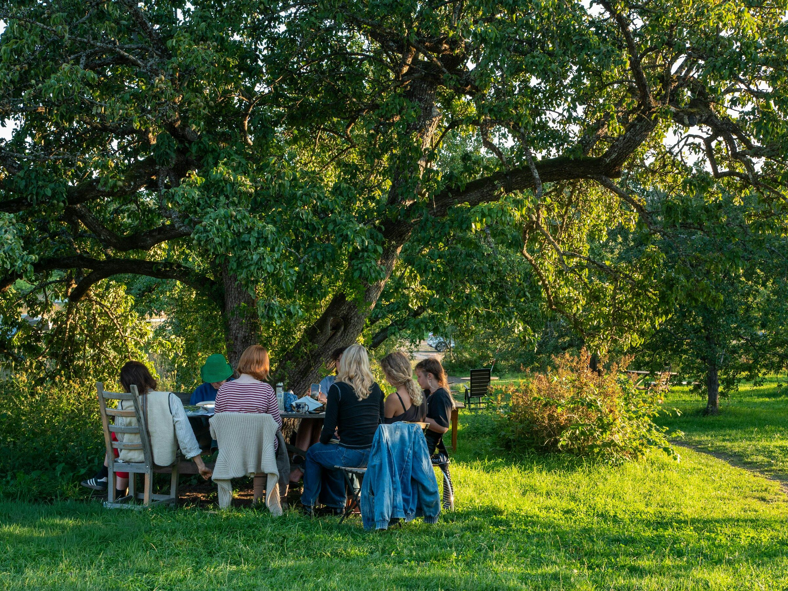
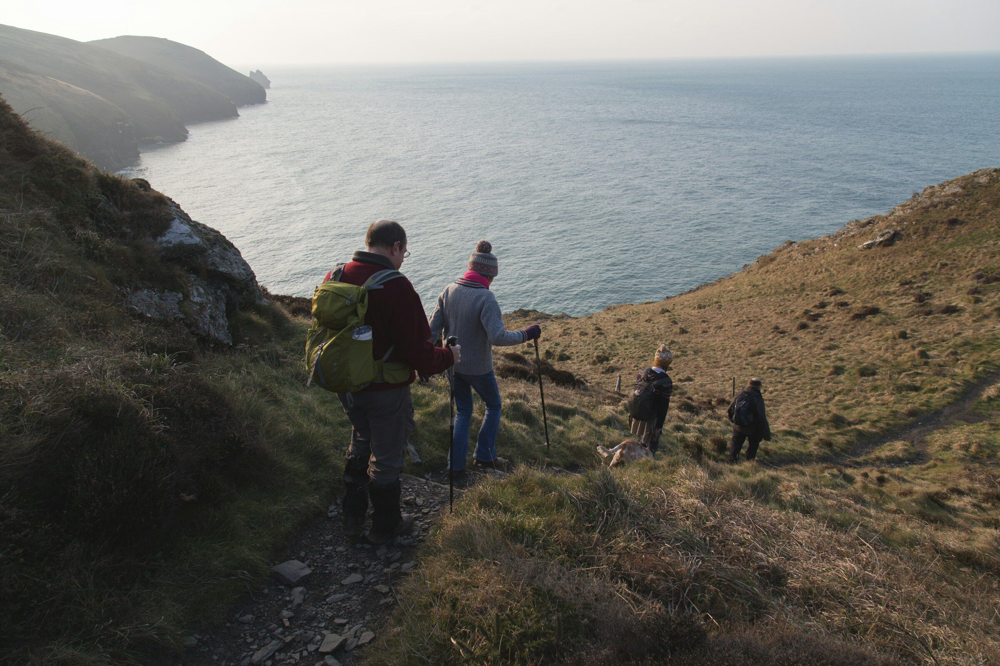

How to Plan a Company Retreat: The Complete Guide
A step-by-step guide to planning a company retreat: goals, budget, destination, venue, flights, programme and follow-up, from a team that books it all.

A company retreat is one of the few moments in the year when a whole team stops, steps out of the office and thinks together. Done well, it resets priorities, builds trust between people who usually only see each other on screens, and sends everyone home with energy. Done badly, it becomes an expensive holiday nobody remembers.
This guide walks you through the full process, in the order we follow ourselves when we plan retreats for teams of 10 to 300 people.
1. Start with the "why"
Before you look at a single venue, write down in one sentence what the retreat must achieve. The most common goals are:
- Strategy: align on next year's priorities, roadmap or reorganisation.
- Connection: build trust in a team that has grown fast or works remotely.
- Reward: thank a team after a strong year (that's an incentive trip).
- Kick-off: launch a new year or a new sales target (a sales kickoff).
The goal decides everything else: how many workshop hours you need, how remote the venue can be, and how much free time to leave. A leadership retreat for 12 people looks nothing like a 150-person company offsite.
2. Set the budget per person, flights included
The single biggest mistake we see is budgeting the venue and forgetting the flights. For a team spread across several cities, flights can represent 25 to 40% of the total.
Think in cost per person, everything included: flights, transfers, accommodation, meals, meeting rooms, activities and a contingency of around 10%. Our budget calculator gives you a realistic range in two minutes, flights included. For a detailed breakdown, read our guide to company retreat costs in Europe.
3. Pick dates early (and check the calendar)
Book 3 to 6 months ahead for groups under 50, and 6 to 9 months for larger groups. Popular windows (May, June, September, early October) fill first, especially in Portugal, Spain and Greece.
Check public holidays in every country your team lives in, school holidays if people have families, and major events in the destination that push prices up. Our 2027 offsite planning calendar lists the best windows month by month.
4. Choose a destination that fits the team
The best destination is the one your team can reach easily and that suits the goal:
- Short flights, lots of options: Lisbon, Barcelona, Porto.
- Sun and nature for strategy plus outdoor time: the Algarve, Mallorca, Crete.
- Surf and startup energy: Ericeira or Taghazout.
- Great value with history: Kraków, Prague, Budapest.
Map where everyone flies from before deciding. A destination that is two hours from London but needs two connections from Berlin may not be the best choice for a mixed team. See all our company retreat destinations.

5. Find the right venue
A good retreat venue has three things: a meeting room that works (natural light, space for breakouts, reliable Wi-Fi), rooms everyone is happy with, and an atmosphere that makes people want to spend time together in the evening.
Exclusive-use venues (a villa, a quinta, a small hotel booked out) are ideal under 40 people. Above that, look at boutique hotels with several meeting spaces. We cover the full checklist in how to choose an offsite venue.
6. Organise the flights properly
This is where most retreats get stressful. When everyone books their own ticket, people arrive at different times, some pay three times more than others, and nobody knows who is stuck when a flight is cancelled.
Booking the whole group centrally lets you coordinate arrivals within the same window, use group fares, keep one budget and handle changes in one place. It's what makes us different: we book every participant's flight, from their own city. Read more in our guide to group flights for company retreats.
7. Build a balanced programme
Our rule of thumb: one third work, one third shared experiences, one third free time. A typical 3-day programme looks like this:
- Day 1: arrivals by early afternoon, a light opening session, a welcome dinner.
- Day 2: a morning of workshops, a team activity in the afternoon, a dinner somewhere special.
- Day 3: a short closing session with decisions and owners, then departures.
Pick activities that everyone can join: a cooking class, an e-bike tour, a boat trip, a surf lesson. Browse our team-building activities for ideas, and avoid anything that forces people out of their comfort zone in front of colleagues.
8. Communicate before, during and after
Send a short practical guide two weeks before: flights, transfers, what to pack, the programme and one contact number. During the retreat, keep one person reachable for every question. Afterwards, share the decisions taken and a few photos within a week, so the energy turns into action.
9. Measure the result
Run a three-question survey after the retreat: what was most useful, what should change, and how connected people feel to the team now. Compare it with the goal you wrote in step 1. That is how you convince leadership to do it again (see how to prove offsite ROI).
Plan it yourself, or let us handle it
You can plan all of this in-house. It usually takes 60 to 100 hours of someone's time. Or you can talk to our expert: we listen to your goals, then send 3 tailored proposals covering venue, programme, activities and every participant's flight. You can also tell us about your project in a few quick questions.
Frequently asked questions
How far in advance should we plan a company retreat?
Three to six months for groups under 50 people, and six to nine months for larger groups or peak dates such as May, June and September.
How long should a company retreat be?
Two to three nights is the sweet spot for most teams. It leaves time for real work and real connection without taking people away from home for too long.
What does a company retreat cost per person?
In Europe, expect roughly €900 to €2,500 per person for three nights, flights included, depending on the destination, season and level of the venue. Use our budget calculator for a tailored estimate.
Should we book flights for everyone?
Yes, if you can. Central booking means coordinated arrivals, one budget and one contact when plans change. We book every participant's flight as part of the retreat.
Let's plan your team's next retreat
Venue, programme, activities and every participant's flight, handled by one team. It starts with a call with our expert.
Keep reading
All articles
How Much Does a Company Retreat Cost Per Person in Europe?
Real cost ranges for a company retreat in Europe, per person and flights included: venue, meals, activities, transfers, plus the hidden costs most budgets miss.

Company Retreat Checklist: 12 Weeks to Departure
A week-by-week company retreat checklist: budget, venue, flights, programme, communication and day-of logistics, so nothing is forgotten.

How to Choose an Offsite Venue: 10 Questions to Ask
The 10 questions to ask before booking a company retreat venue: meeting rooms, Wi-Fi, rooms, food, exclusivity, access, contracts and more.